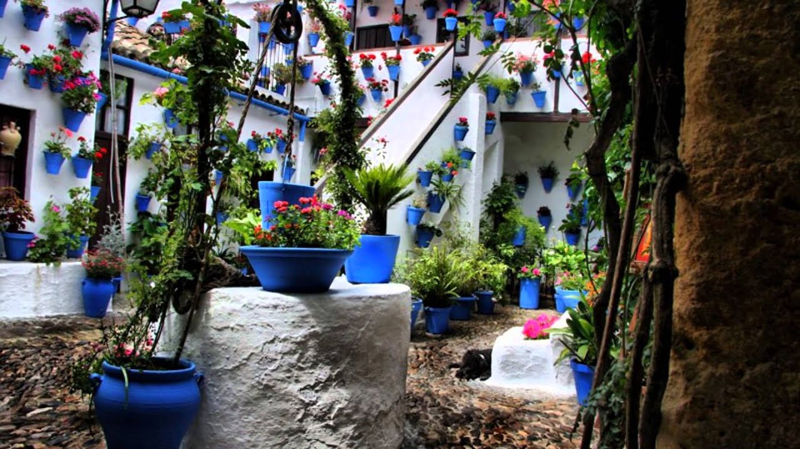
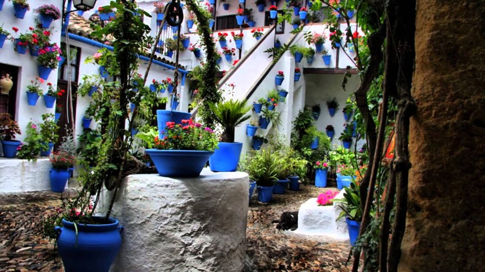

.svg "Escudo de Cordoba")
Los Patios de Córdoba
El Festival de los Patios Cordobeses es un concurso de patios de Córdoba (España) celebrado, generalmente, durante la segunda y tercera semana del mes de mayo. Los participantes abren, de modo gratuito, decorativo sus patios para que puedan ser visitados dentro del horario establecido para tal fin. En los últimos años, los patios en concursos se señalan con macetas de setos que se colocan flanqueando las puertas, de modo que puedan ser identificados de manera clara. A fin de incentivar el festival y conservar la arquitectura típica de la ciudad, se admiten a concurso patios de reciente construcción, estableciéndose dos categoría: arquitectura antigua y arquitectura moderna. En los últimos años, hasta 50 patios han participado en el certamen. Además, el festival se completa con un programa educativo organizado por el Ayuntamiento de Córdoba cuyo objetivo es dar a conocer a los estudiantes la arquitectura y el patrimonio, así como promover el respecto por el mismo. Además, la fiesta se completa con una verbena en el barrio de San Basilio: la asociación de vecinos del barrio pone una barra en un espacio junto a la torre de Belén, y los bares de la calle San Basilio contribuyen con música y venta de bebidas a los grupos de cordobeses y turistas que se reúnen allí. En 1980 fueron declarados como Fiesta de Interés Turístico Nacional, y tras un larga tramitación, consiguieron inscribirse comoPatrimonio Cultural Inmaterial de la Humanidad por la Unesco el 6 de diciembre de 2012.
Un poquito de historia:
Aunque históricamente se ha creído que el primer concurso de patios que hubo fue el del año 1933, se tiene constancia de que ya en el año 19212 y en el año 1927 entre los patios cordobeses se celebraron concursos. Sin embargo, no fue hasta el año 1933 cuando comienzan a popularizarse los mismos, presentándose al concurso 16 patios diferentes de la ciudad, con premios cuantiosos para la época. Tras la finalización de la Guerra civil española, en el año 1939 se incluye como un acto más de la feria cordobesa; por lo que se vuelve en el año 1943 a comentar por la prensa local la necesidad de volver al tradicional Concurso de Patios. Para ello se hace una enumeración de algunos que en aquella época estaban adornados y eran visitados sin que hubiera apoyo y concurso por parte del Ayuntamiento. Eran los siguientes: calle Leiva Aguilar 10, calle Buen Pastor, calle de los Ángeles, Casa de las Bulas esquina a calle Judíos. Fue en el año 1944 la primera constatación de posguerra en la cual se convoca concurso, cuando también se establecen los primeros criterios de valoración como la arquitectura, la decoración y sus características. Los dos años siguientes se celebra el Festival, aunque no se datan los premios, por lo que va a ser en 1947 cuando se consolide el concurso. Durante la alcaldía de Antonio Cruz-Conde, el Festival de los Patios va a evolucionar notablemente, aumentando la cuantía del primer premio desde las 3.000 hasta las 8.000 pesetas en 1962, último año de su gobierno. Además, se conceden ayudas a patios que no han obtenido ningún premio para compensar el esfuerzo y el gasto. Con el objetivo de impulsar el concurso, se celebran conciertos de música clásica y certámenes de belleza. Con la llegada de la democracia y la alcaldía de Julio Anguita, se estableció que los patios deben adornarse con flores del tiempo, se prohíbe la venta de bebida en su interior y no se valora la actuación de artistas flamencos. En 1980 fueron declarados como Fiesta de Interés Turístico Nacional y en 1988 entran en juego más criterios como la variedad floral, el cuidado de macetas y arriates y la iluminación natural. Una década después de dividirán los premios en dos categorías: arquitectura antigua (desde el siglo XVI hasta 1960) y arquitectura moderna (desde 1960 hasta la actualidad).3 El 6 de diciembre de 2012 el Festival de los Patios fue declarado Patrimonio Cultural Inmaterial de la Humanidad por la UNESCO en una sesión celebrada en París. Durante los últimos años y debido a dicha declaración, el número de visitantes no ha parado de crecer, llegando en las últimas ediciones a superar el millón de turistas durante las dos semanas que dura el Festival
 
